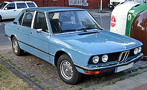

History of BMW
The Otto Flugmaschinenfabrik was founded in 1910 by Gustav Otto in the Kingdom of Bavaria, which was a state of the German Empire. The firm was reorganized on 7 March 1916 into Bayerische Flugzeugwerke AG. This company was then renamed to Bayerische Motoren Werke (BMW) in 1922. However, the name BMW dates back to 1913, when a company using that name was founded by Karl Rapp initially as Rapp Motorenwerke. The name and Rapp Motorenwerke's engine-production assets were transferred to Bayerische Flugzeugwerke in 1922, who adopted the name the same year.[11] BMW's first product was an engine for fighter aircraft of the Luftstreitkräfte. It was a straight-six called the BMW IIIa, designed in the spring of 1917 by engineer Max Friz. Following the end of World War I, BMW remained in business by producing motorcycle engines, agricultural equipment, household items, and railway brakes. The company produced its first motorcycle, the BMW R 32, in 1923. BMW became an automobile manufacturer in 1928 when it purchased Fahrzeugfabrik Eisenach, which, at the time, built the Austin 7 under licence from Automobilwerk Eisenach, badged as the Dixi.[12] The first car sold as a BMW was a rebadged Dixi called the BMW 3/15, following BMW's acquisition of the car manufacturer Automobilwerk Eisenach. Throughout the 1930s, BMW expanded its range into sports cars and larger luxury cars.[13][14]